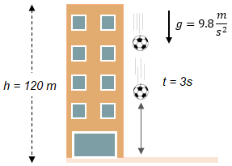

El movimiento de caída libre se refiere al movimiento de un objeto que cae bajo la influencia exclusiva de la gravedad, sin la presencia de ninguna otra fuerza externa que lo afecte. Durante la caída libre, el objeto acelera constantemente hacia abajo a una tasa de aproximadamente 9.8 metros por segundo al cuadrado en la Tierra. Esta aceleración se conoce como aceleración debida a la gravedad. Durante este movimiento, la velocidad del objeto aumenta a medida que cae y la distancia recorrida se incrementa proporcionalmente al cuadrado del tiempo transcurrido..
Un ejemplo común de caída libre es cuando lanzas una pelota hacia arriba y luego la dejas caer. Durante la fase ascendente , la pelota se mueve en contra de la gravedad, experimentando una desaceleración debido a la fuerza de la gravedad contrarrestada por la fuerza aplicada al lanzarla. Sin embargo, una vez que la pelota alcanza su punto más alto y comienza a caer, entra en un movimiento de caída libre.
Las principales características del movimiento de caída libre son las siguientes:
Sí, en condiciones ideales, todos los objetos caen al mismo tiempo en ausencia de resistencia del aire. Esto se conoce como el principio de la caída libre. Según este principio, todos los objetos, independientemente de su masa o composición, experimentan la misma aceleración debido a la gravedad y caen al mismo tiempo.
Aceleración constante: Durante la caída libre, el objeto experimenta una aceleración constante debido a la gravedad. En la superficie de la Tierra, la aceleración debido a la gravedad es aproximadamente de 9.8 metros por segundo al cuadrado. Esto significa que la velocidad del objeto aumenta en 9.8 m/s en cada segundo de caída.
Independencia de la masa: En la caída libre, la aceleración debida a la gravedad es la misma para todos los objetos, independientemente de su masa. Esto significa que dos objetos de diferentes masas caerán al mismo tiempo si no hay otras fuerzas externas que actúen sobre ellos..
Ausencia de resistencia del aire: Para que un objeto esté en caída libre, se asume que no hay resistencia del aire u otras fuerzas externas que lo afecten significativamente. En condiciones ideales, sin resistencia del aire, el objeto caerá sin cambios en su velocidad o dirección. .
Por ejemplo, cuando una pelota se lanza hacia arriba en el aire, la velocidad de la bola inicialmente es hacia arriba. Como la gravedad la jala hacia la Tierra con una aceleración constante g, la magnitud de la velocidad disminuye a medida que la pelota se aproxima a la altura máxima..
La Fórmula de la Caída Libre nos refleja un tipo de movimiento común que todo el mundo puede observar en la vida cotidiana. Si dejamos caer algo accidentalmente podemos ver su movimiento. Al principio, tendrá poca velocidad y hasta el final, gana velocidad y antes de la colisión, alcanza su velocidad máxima.
La caída libre es un movimiento en el que se deja caer un objeto desde cierta altura y mientras este cae, no existe ninguna resistencia o elemento que se aparezca en su camino para interrumpirlo. Por esa razón se llama “libre”.
La fórmula para calcular la velocidad final de un objeto en caída libre es: Vf = Vi + g * t Donde: Vf es la velocidad final. Vi es la velocidad inicial (por lo general, se considera cero en la caída libre). g es la aceleración debido a la gravedad (aproximadamente 9.8 m/s² cerca de la superficie de la Tierra). t es el tiempo transcurrido. Esta fórmula se utiliza para determinar la velocidad final de un objeto en caída libre después de cierto tiempo. Es útil para analizar el comportamiento de un objeto en caída y calcular su velocidad en un momento dado..
La fórmula para calcular la distancia recorrida por un objeto en caída libre es: d = Vi * t + (1/2) * g * t² Donde: d es la distancia recorrida. Vi es la velocidad inicial (generalmente cero en la caída libre). g es la aceleración debido a la gravedad. t es el tiempo transcurrido. Esta fórmula se utiliza para calcular la distancia total que ha recorrido un objeto en caída libre durante un tiempo determinado. Es útil para comprender la trayectoria y el desplazamiento de un objeto en caída y determinar su posición en un momento dado..
La fórmula para calcular el tiempo de vuelo de un objeto en caída libre es: t = √(2 * h / g) Donde: t es el tiempo de vuelo. h es la altura desde la cual se deja caer el objeto. g es la aceleración debido a la gravedad. Esta fórmula se utiliza para determinar el tiempo total que tarda un objeto en caída libre en llegar al suelo desde una altura determinada. Es útil para planificar actividades que involucren la caída libre, como deportes extremos o aplicaciones relacionadas con la ingeniería y la física.